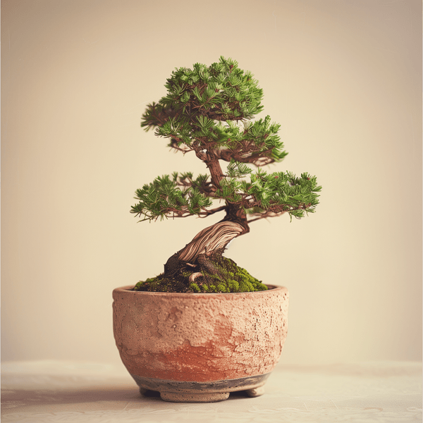
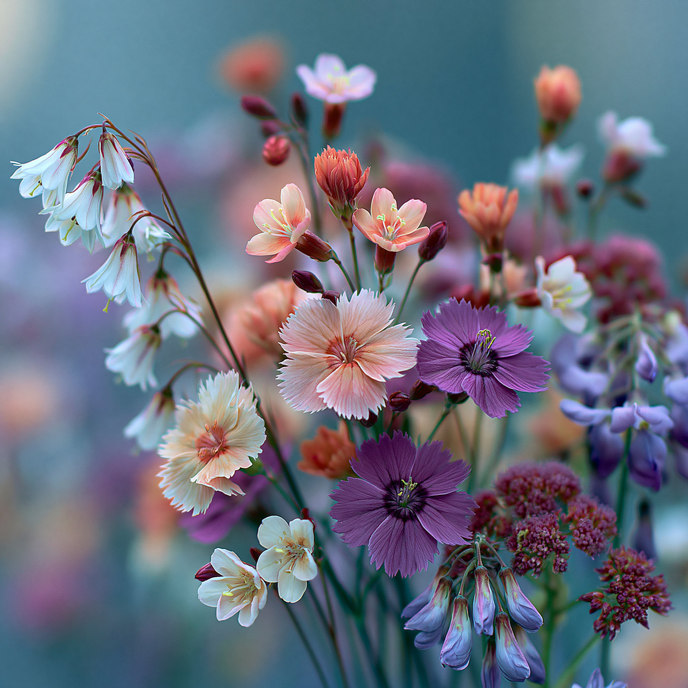
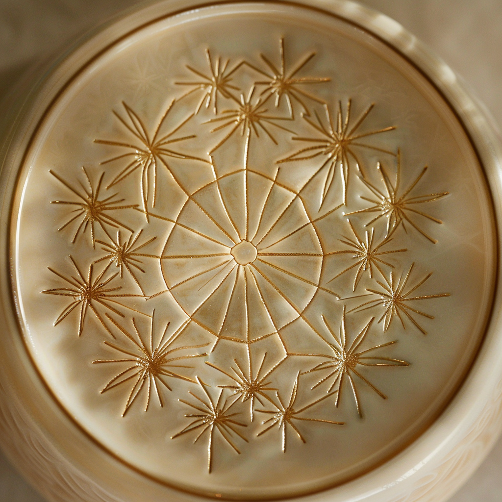

01
SEASONS
日本の盆栽が持つ永遠の美しさを、四季それぞれの視点で描いたコレクション。伝統美と現代的なビジュアルが交わる。
OpenSeaで見る →AI GENERATED BONSAI ART NFT
AIが描く、生きた盆栽の美学。一鉢一鉢に宿る侘び寂びを、デジタルの中に。
BonsaiNFTArtは、AIによって生成された盆栽アートのNFTコレクションです。四季、宇宙、根源、幾何学など、多様なテーマを通して「静けさ」と「時間の美」を表現しています。すべての作品はPolygonブロックチェーン上のOpenSeaにてWETH建てで公開されています。

盆栽は、小さな鉢の中に自然の壮大さと時間の流れを凝縮する日本の伝統芸術です。BonsaiNFTArtは、この精神をAIという新しい筆致で描き直し、不完全さの中にある美、静けさの中にある力強さをデジタルアートとして再構築します。
全作品はPolygonブロックチェーン上のOpenSeaにて、0.02〜0.10 WETHの価格帯で販売しています。各コレクションはテーマごとに異なる世界観を持ち、限定数での展開となります。
全16コレクション、計64作品。それぞれが異なるテーマで「静けさ」を描きます。
日本の盆栽が持つ永遠の美しさを、四季それぞれの視点で描いたコレクション。伝統美と現代的なビジュアルが交わる。
OpenSeaで見る →
宇宙と盆栽の融合。盆栽の持つ永遠の美しさを通じて、宇宙を表現したデジタルアートコレクション。静寂と星屑が、一本の樹に宿る。
OpenSeaで見る →
日本の盆栽と世界神話が融合した、起承転結4部作のコレクション。創世、神々の時代、黄昏、再生——神々や帝国が滅びても残るものを問う。
OpenSeaで見る →
古来の盆栽と、純粋な幾何学が出会う場所。模様木様式の黒松と、力強い幾何学の円やハーフトーンが4つの色彩で交差する。
OpenSeaで見る →
木は自らになる——素材こそがメッセージ。それぞれの盆栽は、その樹種自身の木材だけで構築され、自分が何であったかを覚えている。
OpenSeaで見る →
一目見れば：完璧な日本の盆栽。二度見すれば：それは野菜だった——その瞬間こそが、アートそのもの。
OpenSeaで見る →
千年の盆栽文化とサイバーパンクの未来が融合した限定4作品。伝統とデジタルの境界に生まれた、唯一の存在。
OpenSeaで見る →
日本の「間」の哲学をNFTで表現したシリーズ。余白こそが語る、4点の1/1作品。モノクローム。永遠に。
OpenSeaで見る →
4つの盆栽、4つの金属、ひとつの永遠の姿。生きた木が金・銀・鉄・銅へと姿を変える——決して朽ちない素材に鋳込まれた、自然の形。
OpenSeaで見る →
東洋と西洋が、一枚のキャンバスで出会う。ゴッホ、モネ、クリムト、北斎——4つの巨匠スタイルを、日本の盆栽で描き直す。
OpenSeaで見る →
墨と静寂に宿る、日本の魂。雪舟の精神に導かれ、4つの盆栽が水墨画の世界へと入る。
OpenSeaで見る →
完璧ではない。永遠でもない。ただ、本物であること。苔と石、霧と静寂から生まれた、取り繕うことをやめた美しさ。
OpenSeaで見る →
光すら届かない場所。それでも、盆栽は生き続ける。最も深い宇宙の深淵で、古の根は生き抜く——ここは闇ではなく、生命が始まる場所。
OpenSeaで見る →
石と樹、ふたつの自然の力は分かちがたい。根が石を割り、木と鉱物が溶け合う——盆栽は石と争わない。石そのものになる。
OpenSeaで見る →
万葉集に詠まれた野の花を、盆栽に仕立てて。千年前の歌人が愛した花々が、間と侘び寂びの美意識とともに、いまデジタルの上に咲く。
OpenSeaで見る →
四本の盆栽、四つの日本の伝統文様、ひとつの成長の物語。麻の葉の力強さから、七宝の絶えることのない調和まで、それぞれの意味を重ね合わせる。
OpenSeaで見る →